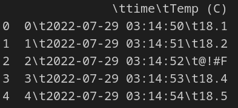
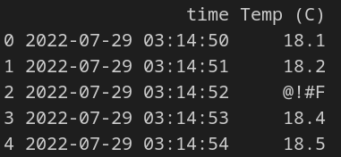
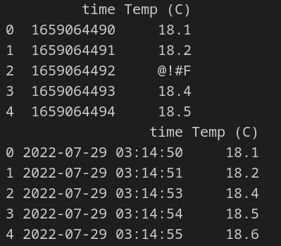

Chapter 7: Wrangling data
Contents
Chapter 7: Wrangling data¶
What you will learn¶
Data wrangling is the processing of raw data into a useable form. In this chapter we will explore data cleaning and filtering techniques to produce data useable in our dashbords.
Cleaing up a CSV file¶
CSV files are a common method of storing data that doesn’t involve a database. We’ll go through an example where we are given time-series temperature measurements in CSV format and need to clean in up. Download this CSV file:
csv_file.
Let’s start by importing the data using Pandas and use the head command to see the top 5 rows of data:
import pandas as pd
raw_data = pd.read_csv('temp_data.csv')
print(raw_data.head())

The huge numbers for the time column are in the Unix time format which is the number of seconds from January 1st 1970. Let’ use pd.to_datetime to transform the times into a more readable format:
import pandas as pd
raw_data = pd.read_csv('temp_data.csv')
raw_data['time'] = pd.to_datetime(raw_data['time'],unit='s')
print(raw_data.head())

We can also see that one of th evalues in the Temp (C) column is invalid: @!#F. We have a few options for this erroneous data:
Keep the data as is
This leads to unusable dataframe columns
Drop the row of data
Dropping rows has greater impact as the number of columns grows
Insert some value for the erroneous data
In this example we are measuring temperature, which changes slowly, so it’s probably safe to drop the row if the data is corrupted. We’ll use Pandas iterrows() function to go through the dataframe line by line to remove erroneous rows:
import pandas as pd
import numpy as np
def check_numeric(x):
try:
float(x)
return True
except:
return False
raw_data = pd.read_csv('temp_data.csv')
print(raw_data.head())
raw_data['time'] = pd.to_datetime(raw_data['time'],unit='s')
for index, row in raw_data.iterrows():
if not check_numeric(row['Temp (C)']):
raw_data.drop(index, axis=0, inplace=True)
raw_data.reset_index(drop=True, inplace=True)
print(raw_data.head())

Basic Operations with Pandas¶
Pandas is a data analysis and manipulation library
Links to use for Pandas data wrangling¶
https://towardsdatascience.com/data-wrangling-using-pandas-library-ae26f8bbbdd2
https://towardsdatascience.com/7-must-know-data-wrangling-operations-with-python-pandas-849438a90d15
https://betterprogramming.pub/data-wrangling-with-pandas-57f7f72fe73c
https://medium.com/database-laboratory/data-cleaning-with-pandas-f8f869f63404
df.head() # shows top 5 rows of df
df.types() # shows data type of columns
df.describe() # computes various statistics for each column
# Dealing with missing values
df.isna().sum() # display how many **NA** entries in each row
Processing data¶
Cleaning, processing, and wrangling data before use